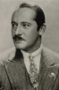

Country:United States, 113 minutes
Spoken languages:
Genres:Romance, Drama, Horror
Director(s):Wallace Worsley
Writer(s):Edward T. Lowe Jr., Victor Hugo, Perley Poore Sheehan, Chester L. Roberts
Video Codec:Unknown
Number: 79


Certification:NR
Storyline:
In 15th century France, a gypsy girl is framed for murder by the infatuated Chief Justice, and only the deformed bellringer of Notre Dame Cathedral can save her.
Cast: 

Medium: Original DVD,
Loaned: No
Aspect ratio: Unknown